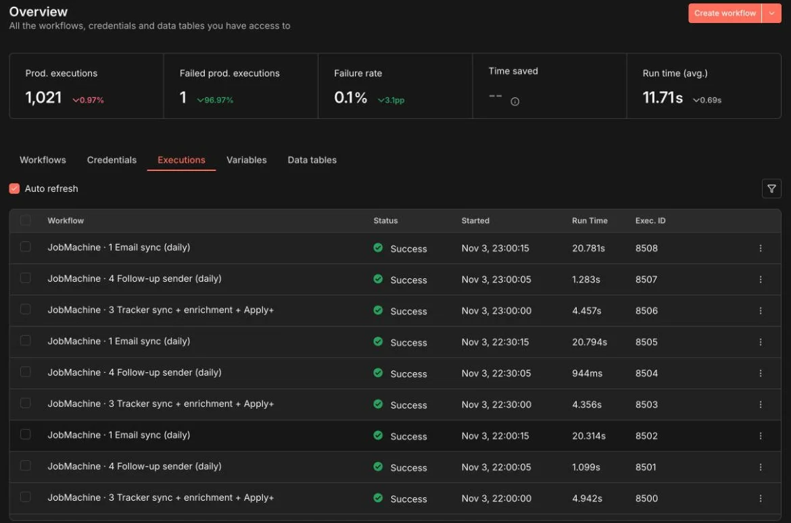

About 1,000 runs a week on one small AWS server, live since September
Self-hosted n8n has no execution limit, so every 30 minutes costs the same as once a day
The execution history is how I caught a filter quietly dropping interview emails
Credentials and run data live on infrastructure I control
checked every 30 minutes
swept once a week
every lead and reply
what needs me, and what it cost
only after my OK on the row
+ ChatGPT Actions: ask it from any AI chat
It alerts me itself, at most once a day: the OpenAI key runs dry · the send gate fails its self-test · a sync finds zero emails
The server and its last runs
One email sync, node by node
The send gate testing itself

A green run can still have done nothing. Every bug that cost me something showed up as a Success
The Sheets node took row 1 as the header. Row 1 was a banner. Every key came out wrong, so the send gate never saw a Status and skipped every row.
Every Sheets read pins its header row and first data row.
dataLocationOnSheet: { rangeDefinition: 'specifyRange', headerRow: 2, firstDataRow: 3, range: 'A2:Y300' }
And the gate checks its own columns on every run. Missing Status? Nothing sends and I get an email.
I used an operator my n8n version didn't know. n8n didn't fail: it logged a warning and sent every row down the false branch. New rows never reached my tracker, and every run was green.
Nov 04 16:30:05 n8n: Unknown filter parameter operator "boolean:notTrue" # ×17, every run
The fix: a condition this version knows
{{ $json._nothing !== true }} · is trueAfter any IF edit, search the server log
journalctl -u n8n | grep "Unknown filter"In n8n, a node that outputs nothing quietly ends its branch. Someone sorted a sheet, a banner landed in row 1, my company list came out empty, and the email step simply never ran.
Count what a run produced, not whether it ran.
every rule met: must pass
same row, Send OK unticked: must stop
Plus: rows came back, the columns exist, the lead links came back. Any check fails: nothing is sent, and I get one email that day. The canaries never leave the node.
const mustPass = { Status: 'DUE', Mode: 'AUTO SEND', 'Send OK': true, Due: yesterday, ... }; const mustStop = { ...mustPass, 'Send OK': false }; if (!gate(mustPass)) problems.push('gate blocks everything'); if (gate(mustStop)) problems.push('gate sends unapproved rows'); if (problems.length) return failClosed(problems); // send nothing return realRows.map(gate).filter(Boolean);
Self-hosting means everything outside the workflow is yours too: the credentials, the OAuth app, and which version is actually running.
Credentials I attached in the n8n UI lived only on the server. My exported JSON had none on 14 nodes. A CLI re-import silently removed them, and that evening's scheduled runs failed.
{
"name": "Read tracker",
"type": "n8n-nodes-base.googleSheets",
"credentials": { ... } ← not in the file}"credentials": { "googleSheetsOAuth2Api": { "id": "…", "name": "Google Sheets account" } }
A Google OAuth app in Testing mode issues refresh tokens that expire after 7 days. Gmail and Sheets worked perfectly for exactly one week.
Publish the consent screen to Production, then reconnect Gmail and Sheets
A daily email if the OpenAI key runs dry
In n8n 2.x, editing a workflow changes the draft. Scheduled runs keep using the published version until you publish. A fix I wrote stayed a draft while the old version kept running.
edited and saved
not runningwhat every scheduled run uses
every 30 minPublishing is a deploy step, and so is checking it.
$ n8n publish:workflow \ --id=<workflow> --versionId=<tested> $ sudo systemctl restart n8n # then: which version did the next run use?
n8n does the mechanics. The model only makes the judgement calls, and it can never take an action on its own.
Every new email goes to the model in one call. Then one run with 200 emails failed outright, and pulling 500 at once hit Gmail's per-minute quota.
mails.splice(60); // at most 60 per call body: { model: 'gpt-4o-mini', temperature: 0, response_format: { type: 'json_object' } }
I sent raw Gmail ids. Now and then the model put a verdict on the wrong id, and a newsletter got pinned to a company I'd applied to.
"19a3f…" application "19a40…" newsletter
"19a40…" → rejection "19a3f…" → newsletter
Number the emails 1 to 60 and make the model echo each subject. If the echo doesn't match, confidence drops to 0.5 and nothing acts on it.
{ "n": 7,
"subject": "Your application",
"kind": "rejection",
"confidence": 0.9 }A seen-items cache in the workflow's static data means only new emails reach the AI. But n8n doesn't save static data on manual test runs, so every test judged the same 60 emails again.
my Send OK, a final email, due date passed, a real address
did they write since? did I already email them?
already answered? rejected? tone off? can only block
sends, marks the row done
Fails closed: if the AI call errors or the key is dry, every send is held, the row gets a red flag, and I get an email
Human yes: nothing goes out without my tick on that exact row; the agents can draft, never approve
This week: pick one gate in your own workflows and give it a row that must fail. Then tell me what you found.